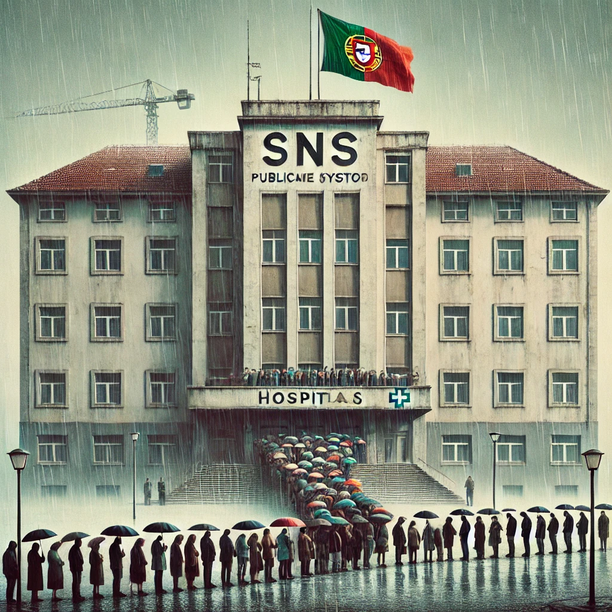

Publicado em 2025-04-14 13:22:26
O Serviço Nacional de Saúde (SNS) é, para muitos portugueses, um dos maiores orgulhos do Estado Social. Criado com a missão de garantir acesso universal, gratuito e equitativo à saúde, o SNS representa um pilar fundamental da democracia e da justiça social em Portugal. Contudo, quem utiliza os serviços públicos de saúde sabe que entre o ideal e a prática existe um fosso que tem vindo a aumentar.
Longas horas de espera, falta de profissionais, instalações degradadas, equipamentos obsoletos e comunicação ineficiente são apenas alguns dos problemas que os utentes enfrentam diariamente. Muitos têm experiências traumáticas nos serviços de urgência, onde a espera pode ser feita ao frio, à chuva e sem informação clara sobre o tempo de atendimento ou o processo de triagem.
Apesar de boas intenções, o SNS24 nem sempre funciona como devia. A atribuição de senhas para urgências nem sempre garante rapidez ou prioridade no atendimento, e por vezes resulta apenas num maior congestionamento nos hospitais, sem resolver o problema na origem.
Os profissionais de saúde continuam a ser o maior ativo do SNS. Trabalham muitas vezes em condições precárias, com turnos extenuantes e poucos recursos. Ainda assim, mantêm a dedicação e o profissionalismo, sendo muitas vezes o único elo de humanização num sistema que falha nos aspetos mais básicos.
Reformas estruturais, investimento sério e um plano de ação com metas claras são cruciais. Não podemos continuar a tratar a saúde como um custo, mas sim como um investimento no bem-estar e produtividade de toda a sociedade.
É urgente ouvir os utentes, dar voz aos profissionais e repensar o modelo de funcionamento, garantindo que todos os portugueses tenham acesso digno e eficaz aos cuidados de saúde.
Se tém uma experiência que gostarias de partilhar ou opinião sobre o estado do SNS, comenta abaixo e participa na conversa.
Por: Francisco Gonçalves